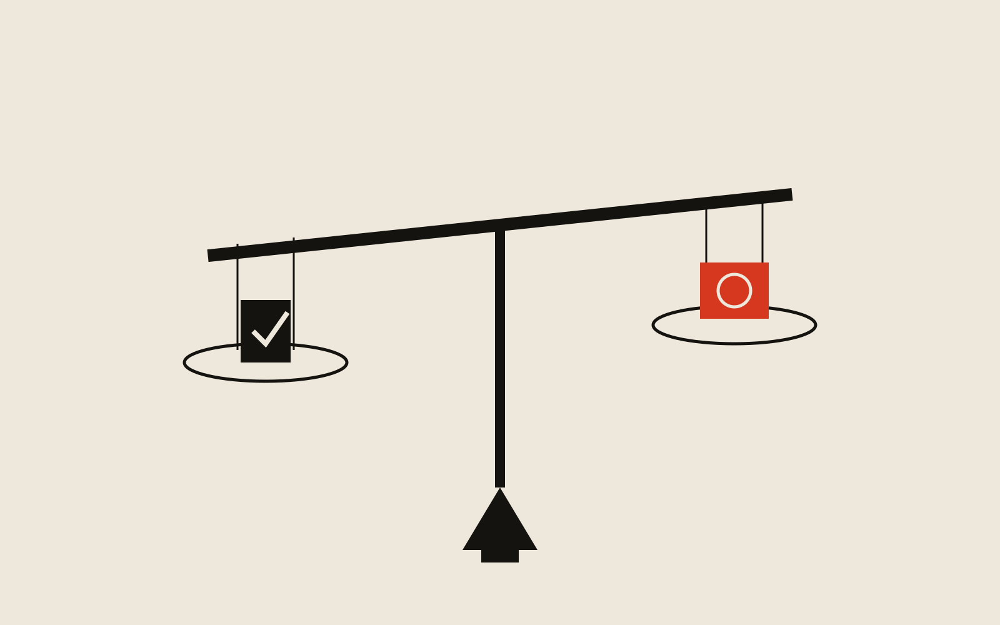
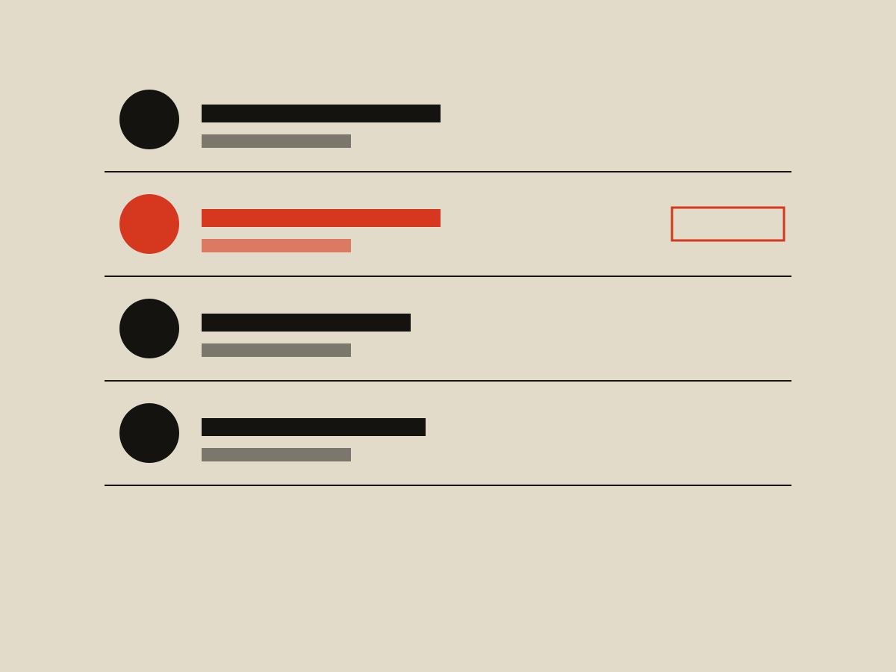
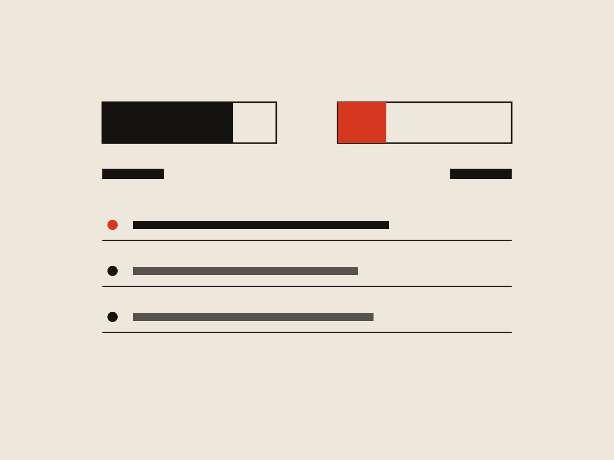

Checks & Balances
This is a speculative, satirical project which imagines a (perhaps not-so-distant) future where political corruption is even more rampant and even more obvious than it is today. Regular citizens must vote with their wallets in addition to at the ballots. As such, an app for crowdfunded bribery is created, called Checks and Balances. Below is what a proposal for said app would look like.

Meet Terry
Terry is a working-class American who is really worried about an upcoming bill called the CASH Act. He has written letters to his senator, but hasn't gotten any responses. Terry isn't sure if they made it to his senator, or that his voice is being heard.
Meet Sen. McMonnell
Senator McMonnell is Terry's senator. He has been in politics for longer than anyone can remember, which of course means he is trustworthy and reliable. He has so many voices clamoring for his attention that he hasn't had a chance to read Terry's letters, and is unaware of his concerns about the CASH Act.
Get connected
Senator McMonnell, it's well known, is eager to listen to the will of his constituency — especially when they express their will through legal tender. So Terry downloads Checks & Balances.
See representatives at every level of government
Once registered, Terry can see a list of all of his representatives, can easily find his senator, and any upcoming votes.

Upcoming votes clearly labeled, with related information for voters
From here, Terry can view every bill & issue Senator McMonnell is going to be voting on. He can also see how many votes each issue has, either for or against it.
Easy voting, direct from a linked bank account
With instant transfers, Terry can vote in a matter of seconds! The more important an issue is, the more funds he can choose to vote with. Since the CASH Act will have a huge impact on him, he votes $150.00 towards yes.
See the progress
Terry can monitor the issues he's voted on, and can even see each vote as it comes in. This helps him stay informed, educated, and gives him the satisfaction of knowing he participated in our glorious democracy!
